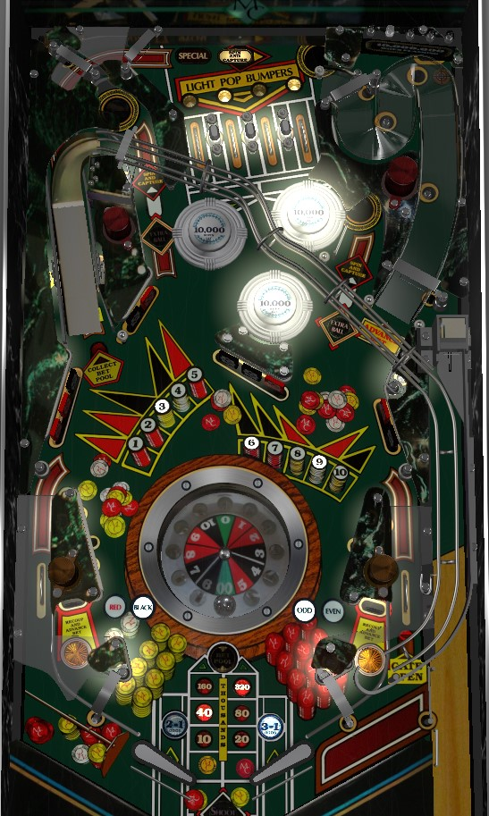

Not to be confused with the electromechanical Monte Carlo (Bally, 1974).
This game is a shatz/alley passer's dream! Use very late flips with either flipper to pass the ball into the opposite in lane, where a standup target awards a bonus advance and opens the right out lane gate. After 40 switch hits anywhere in the game, the right ramp is briefly lit for 10,000,000 points; drop everything and try to shoot it when this is the case. Once base bonus is maxed at 630,000 points (10,000 per advance), shoot flashing drop targets to light winning bets, then shoot flashing saucers to spin the roulette wheel and progress toward multiball, where all scoring is multiplied by the number of balls in play.
There is no skill shot on Monte Carlo. On the plunge, the ball goes up a flip ramp in the shooter lane, where it is dropped onto a habitrail and directed to the right flipper. This happens pretty quickly, so be ready to make a move on the ball with the right flipper or you can instantly drain before you realize what happened.
The inserts 1-10 on the playfield each correspond to a drop target. Unlit drop targets score 5,000 points; lit drop targets score 10,000 points; flashing drop targets score 15,000 points and cause that number to be lit solidly. Completing any of the 4 banks advances the bonus multiplier (to 2x, then 3x) and resets that bank.
Shooting a saucer when it is flashing spins the roulette wheel set into the playfield and scores 10,000 points. Quite a few different things can happen next based on what pocket of the roulette wheel ends up being the winner.
Spinning the roulette wheel unlights all lit numbers, so their drop targets need to be collected again.
In competition/novelty play, Special and extra ball both score 500,000 points.
After shooting any saucer, the left ramp is lowered, turning the left orbit into a left ramp. Making the left ramp scores the entire current Bet Pool, without multiplier, and re-raises the ramp so the orbit can be shot.
The Bet Pool bonus starts at 10,000 points. Build the Bet Pool by shooting the right ramp, or hitting one of the standup targets that is directly behind the flippers. These targets can be shot directly with a very late shot from the opposite flipper, known as a shatz or alley pass. Very skilled players can build the bonus by alley passing the ball back and forth in rhythm many times without missing. Each advance of the Bet Pool adds 10,000 points, with a maximum Bet Pool of 630,000 points. Collecting the Bet Pool bonus by shooting the lowered left ramp or draining the ball ignores the multiplier, and awards only the base bonus; the only way to have the multiplier factor in is by spinning a number on the roulette wheel that has been lit by drop targets. Neither the base Bet Pool nor the multiplier are ever reset during the game, so getting them as high as possible early on is very important.
The right ramp can be lit for 10,000,000 points. Operator settings determine whether the ramp is lit after every 40 switch hits around the game, or "randomly". I have no other details on what "randomly" could mean. On the 40-switches setting, the 40-switch count is preserved across all players, so if one player hits 37 switches on their ball, the second player needs only 3 switches to light the 10,000,000 ramp. Once the ramp is lit, it only stays lit for about 5 seconds with no grace period, so if the ball ends up on the left flipper at all during this time, you'll probably only get one shot at the ramp. No matter what, it is absolutely worth going for, since it is worth 10,000,000 points on a game where a good score without this feature is around 3,000,000-5,000,000 points.
If you are opting for the shatz/alley pass strategy, you will likely have the ball cleanly on a flipper when the ramp starts flashing, which is another benefit of using that method.
There are 4 top lanes, of which one is lit at a time; the lit lane moves left to right on its own about once a second. The automatic rotation of this lit is paused whenever the right flipper is raised, so there is not flipper lane change, but flipper lane anti-change? Regardless, you will want to roll through lit top lanes. Unlit lanes score 5,000 points; lit lanes score 15,000 points and light one of the three pop bumpers. If all 3 pop bumpers are already lit, lit top lanes score 50,000 points instead. Pop bumpers score 1,000 points or 10,000 when lit; each hit of a pop bumper toggles the current Red/Black bet and rotates which pop bumper(s) are lit.
In addition to spinning the roulette wheel, saucers that are flashing also lock a ball for multiball. Lock a ball in all 3 saucers to start multiball. Lock stealing is available in a multiplayer game. During multiball, all playfield scoring is multiplied by the number of balls in play (2 or 3), but there are no other multiball-specific scoring features. I sure hope the 10,000,000 right ramp doesn't get multiplied during multiball; I highly doubt the 10,000,000 and the left ramp bonus collect can be multiplied. The best use of playfield multipliers during multiball is to get balls to the top of the table and try to cash in on 30,000-point lit pop bumpers. There is no ball save or multiball restart.
The slings and out lane entrances on Monte Carlo are much higher than a conventional game to make room for the in lane/alley pass bonus advance lane. Out lanes score 50,000 points. The in lane alley pass targets score 15,000 points and a bonus advance, as well as opening the right out lane gate, which redirects a ball back to the shooter lane one time. In my experience, center and left out lane drains are far more common than right out lane drains, but this can vary machine to machine.
Bonus starts at 10,000 points and is increased by 10,000 with each right ramp shot or in lane standup target shot up to a maximum of 630,000 points. Bonus multiplier is advanced to 2x then 3x with each roulette spin or each completed bank of drop targets. Base bonus and multiplier are never reset during the game for any reason. There are 3 ways to collect your bonus:
In competition/novelty play, extra balls and specials score 500,000 points.
In a 5-ball game, drop targets score 1,000 points when not lit and 5,000 when lit solidly, instead of 5,000 and 10,000 respectively.